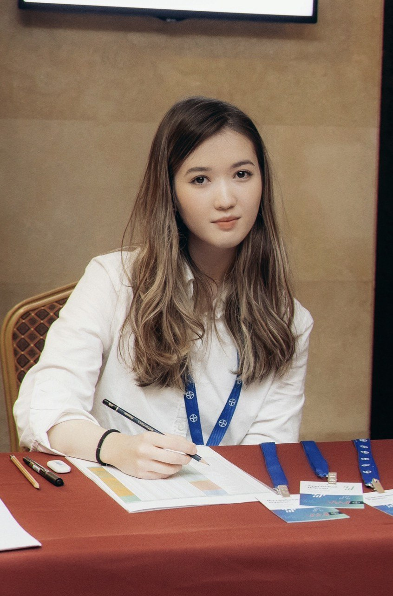

Symbat Ussupova
/səmˈbɑːt/ — Sim-baht
I’m a media researcher and creative technologist working across AI, games, and 3D. I’m interested in how stories are framed, what gets left out, and how interactive media can help us see those choices more clearly.

About
I studied Information and Communication Technologies in Kazakhstan, where I became interested in the intersection of media and technology. My undergraduate research focused on how news outlets in different countries framed the same events during military conflicts.
Since then, I’ve worked across UI/UX, 3D, animation, and game development. I co-founded a small game development team and worked on projects like Contexta, an interactive tool for exploring media manipulation. I’m interested in turning research questions into things people can see, use, and experience.
Recognition
- Second place RAID Game Jam 2025
- Top 10 Best Game on Solana
- Best Visual & Storytelling Demo Day 2025
Research
-
Contexta
A tool that analyzes news articles for manipulative framing and shows where and how it appears in the text. Built for the UNESCO Youth Hackathon.
-
.png)
The Influence of the Media on the Formation of Public Opinion in the Context of Military Conflicts
A comparative study of how different news outlets framed the war in Ukraine.
-
Publication
Two peer-reviewed papers
Two papers covering media framing and technical network architecture.
Games, 3D, and Film
-

Pharos
Mobile action-strategy game about a lighthouse that guides ships while defending itself from creatures drawn to its light.
-

Servant's Brew
A game about a clumsy skeleton servant who brews potions and throws them to his undead lord during a battle. Built in four days at RAID Game Jam 2025, where our team placed 2nd out of 105 teams.
-

Delivery Shift
A cozy sci-fi platformer where your delivery bot explodes when the battery dies, leaving the next bot in line to finish the job.
-

3D art
Environments, props, and material studies made with Blender, Maya, and Substance Painter.
-

Kazakh Animation and Its Impact on the Cultural Identity of Young Minds
A documentary short exploring how the artists at Ara Studio use modern animation to preserve Kazakh culture and shape youth identity.